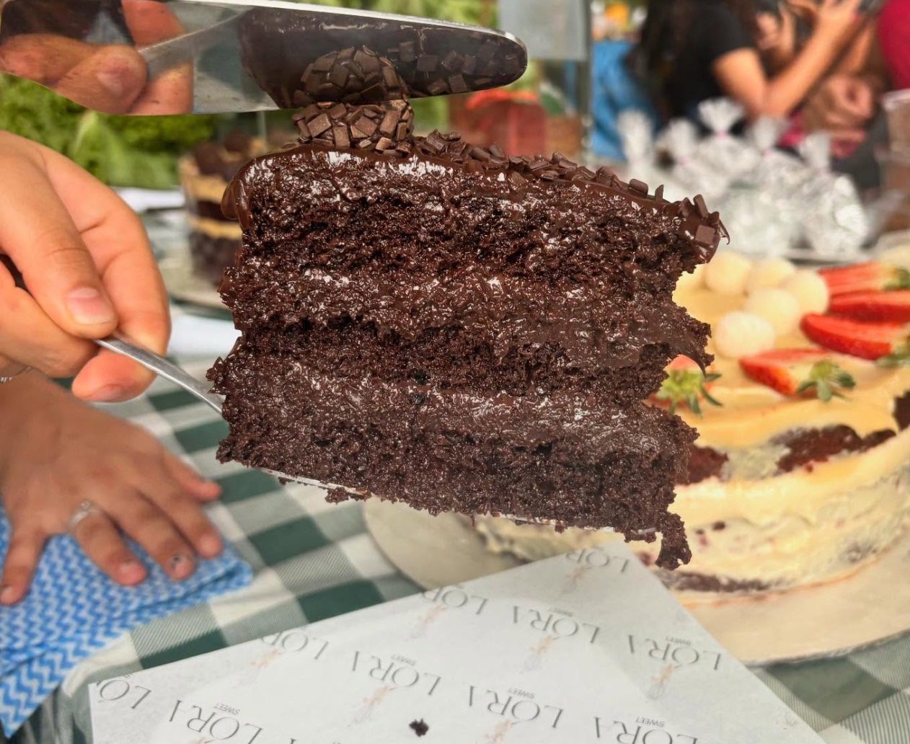
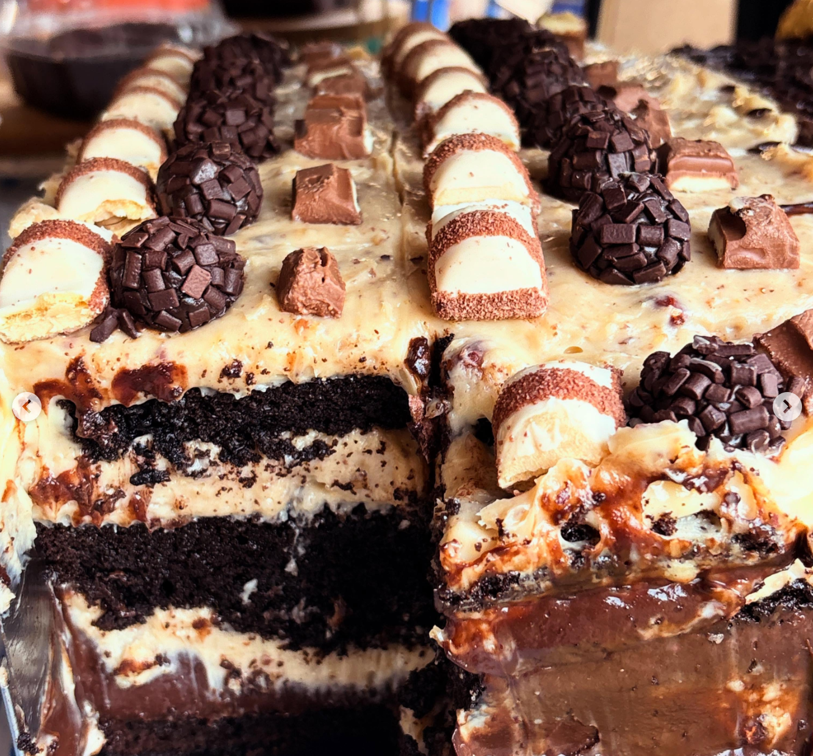
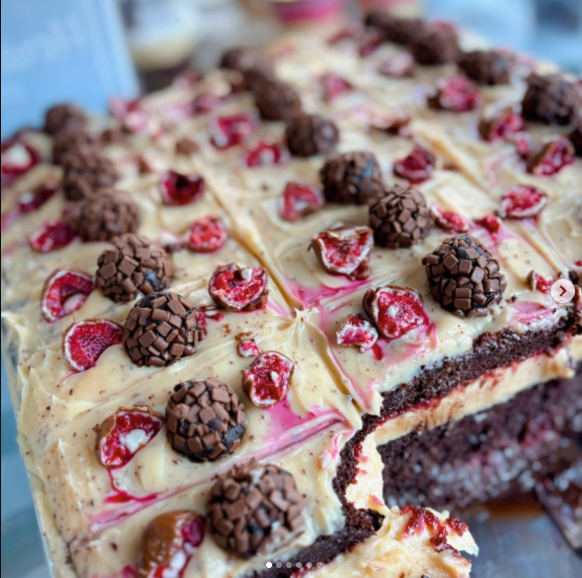

A cada fatia uma nova sensação!
Bolos toda terça e sexta na feira da 304 sul!Da Irlanda para Palmas: A história da Matilda! Muita gente conhece a Matilda como o nosso carro-chefe, mas poucos sabem que ela carrega um passaporte carimbado e muita história na bagagem! Tudo começou há 3 anos atrás, lá na Irlanda. Foi lá que a Matilda nasceu e onde eu percebi que tinha algo especial nas mãos. Quando voltei para o Brasil, eu não tinha banca na feira, não tinha loja, não tinha nada... só a coragem e a receita dela debaixo do braço.
Venha experimentar nossos melhores sabores:



Bolo Matilda: bolo de chocolate muito gostoso e cremoso.
Bolo Kinder Bueno: bolo com sabor de chocolate e Kinder Bueno.
Bolo Bombom Franuí: bolo de chocolate com framboesa, doce e azedinho.
Acesse nosso instagram para saber mais:
Instagram da Lóra Sweet